Hand-popped. All natural. Made with love.
We set up a 10×10 tent and hand-pop kettle corn in an A1-Sweet Machine from the Kettle Corn Machine Company. It features an 80-quart steel bowl that pops 6 cups of kernels about every 6 minutes — roughly 60 gallons of kettle corn per hour!
Our setup is propane-powered with no electricity needed. We can pop anywhere.
Watch our Tent Tour Video to see how our operation looks and works!
Kettle corn fills the air with a delicious, appetizing aroma. We can pop on-site or bring pre-popped bags. Contact us to book us for your event!
Want bags delivered? We've got you covered:
Delivery outside Kansas is not available at this time.
Place an OrderWe've had the privilege of popping at some amazing events across Kansas.
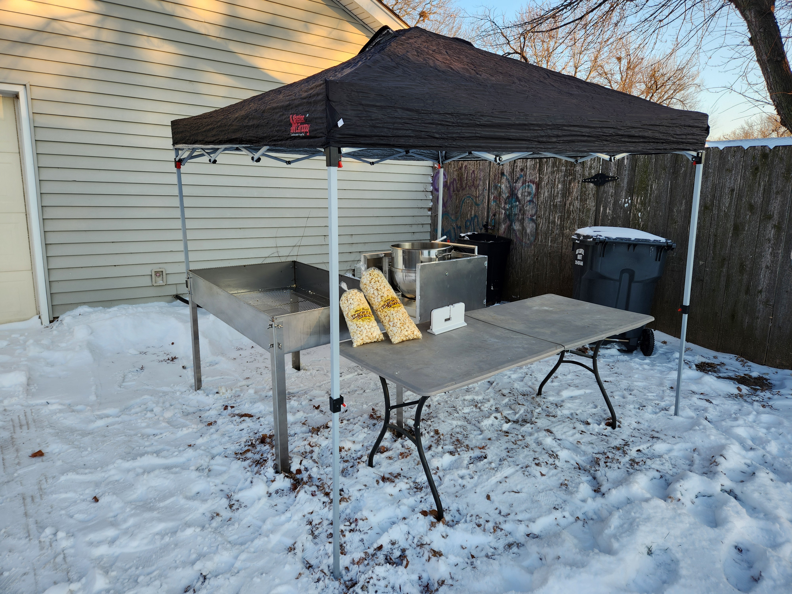
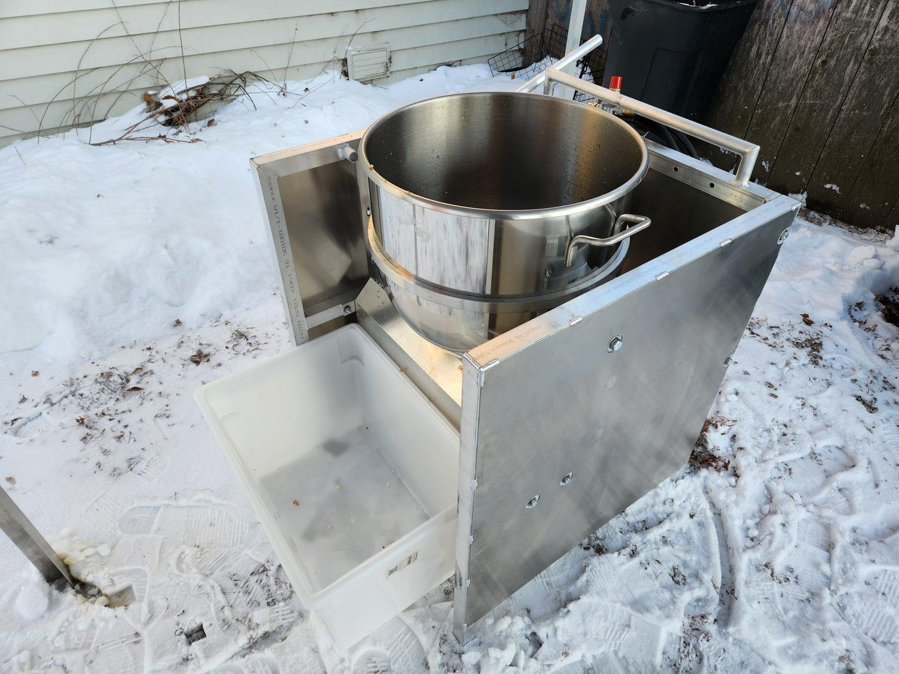
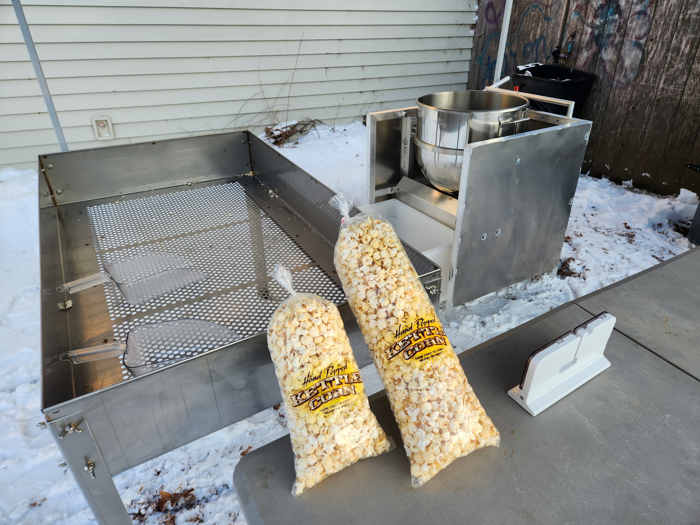
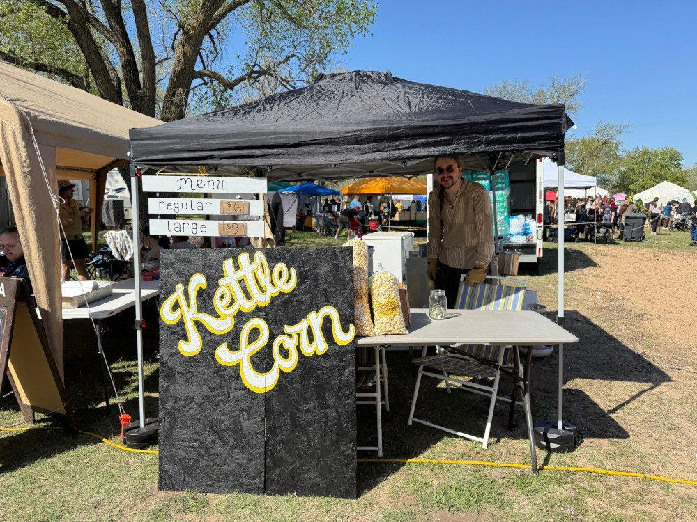
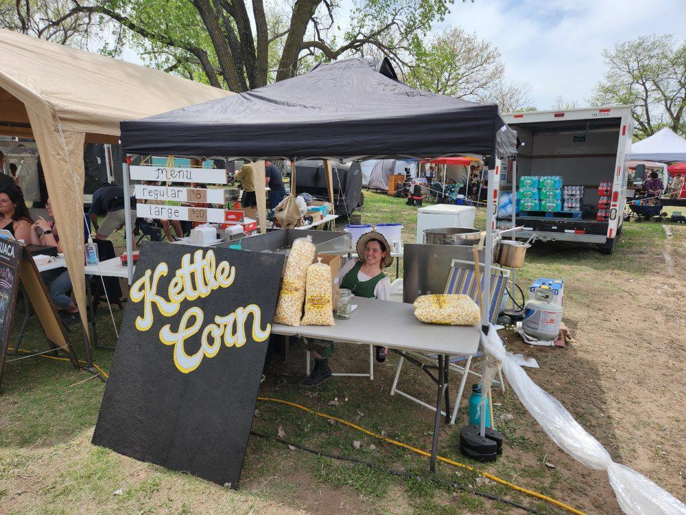
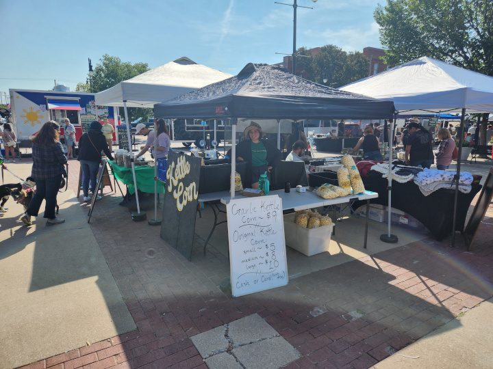
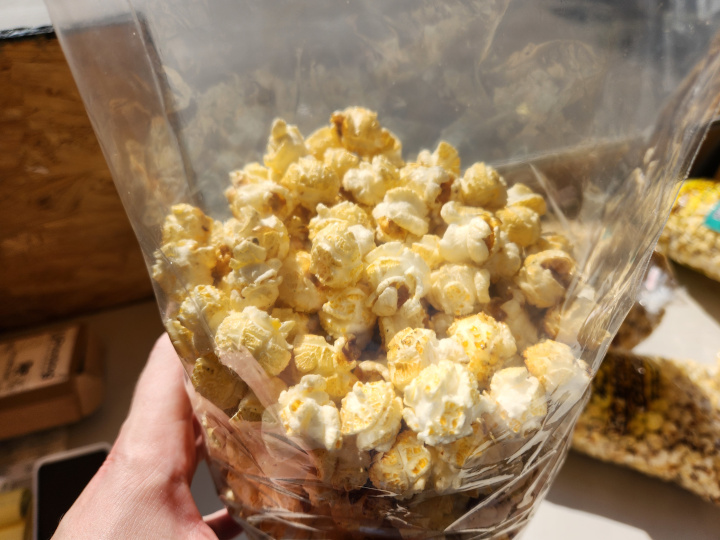
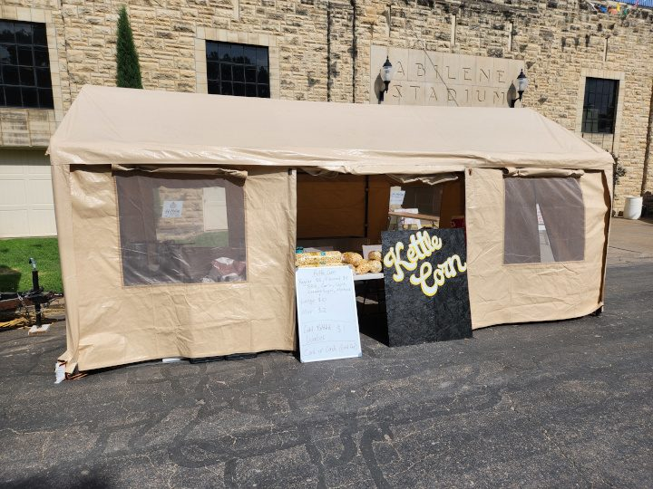
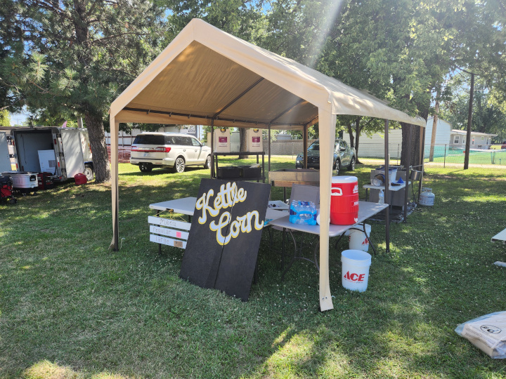
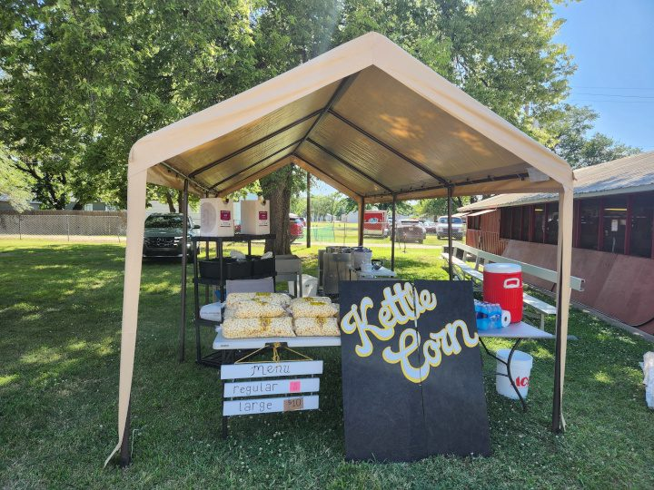
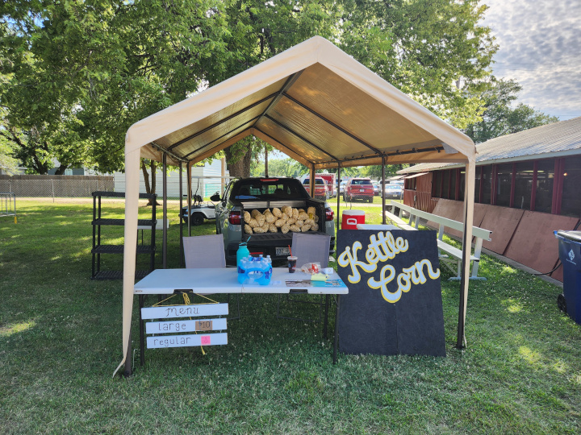
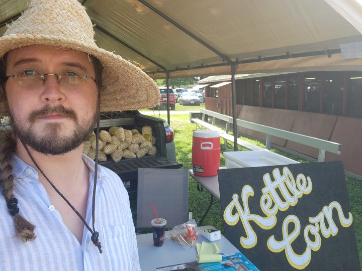
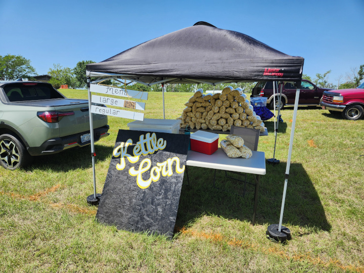
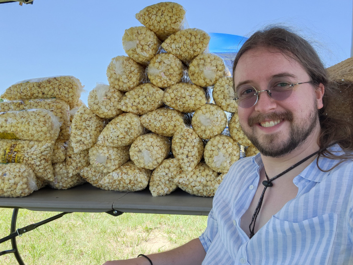
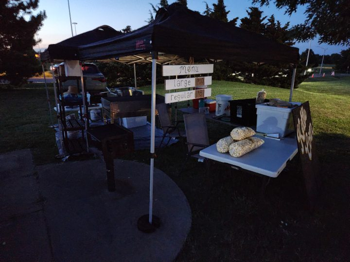
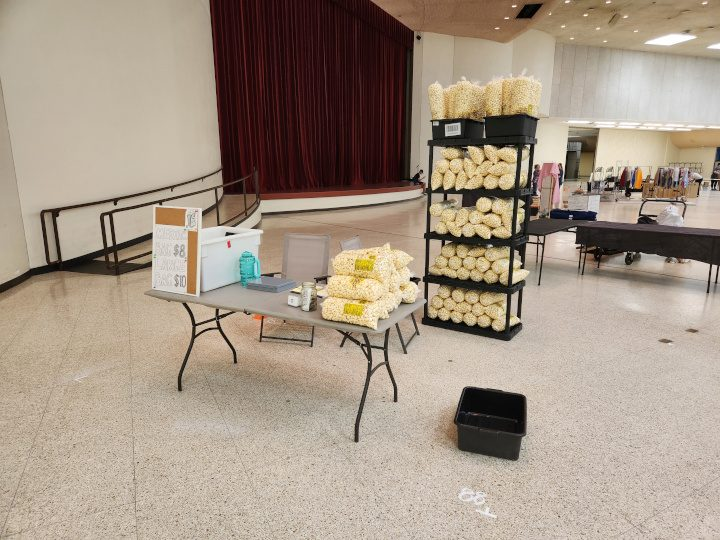
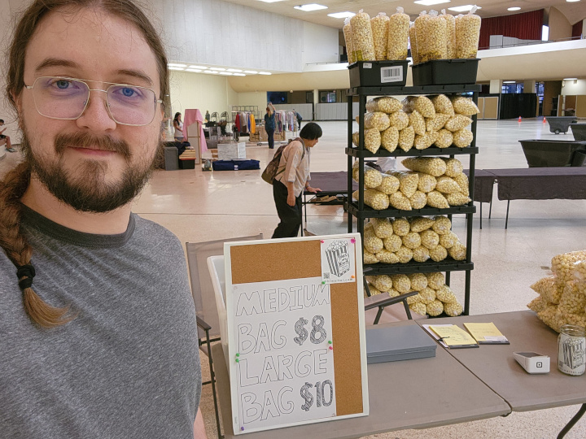
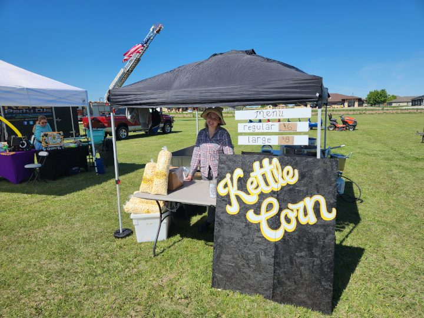
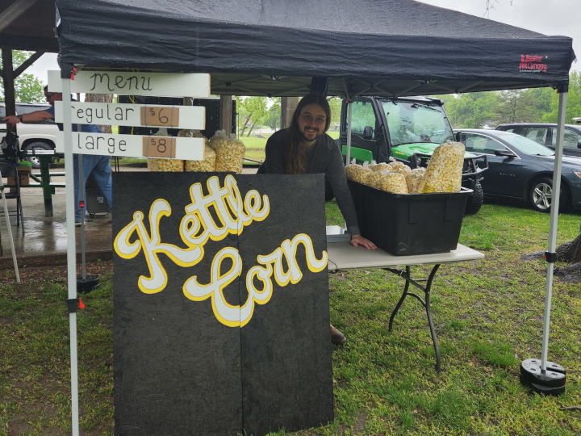
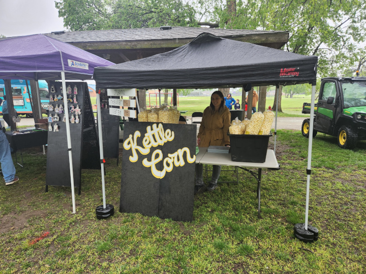
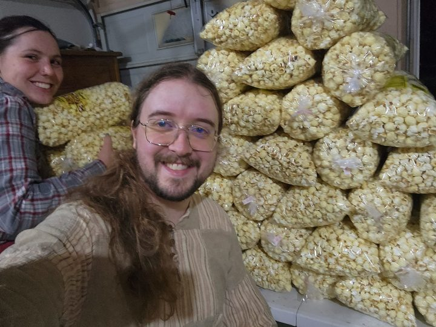
| Event | Location | Date(s) | Info |
|---|---|---|---|
| Great Plains Renaissance Festival | Wichita, KS | September 27–28, 2025 | Visit → |
| Art & Ale at Norton's Brewing Co. | Wichita, KS | October 5, 2025 | Visit → |
| Event | Location | Date(s) | Info |
|---|---|---|---|
| Great Plains Renaissance Festival | Wichita, KS | April 12–13, 2025 | Visit → |
| Party in the 060 | Haysville, KS | April 26, 2025 | Visit → |
| Legionfest | Ellsworth, KS | May 3, 2025 | Visit → |
| Artfest Pop Up Market at Riverfest | Wichita, KS | May 31 – June 1, 2025 | Visit → |
| First Friday at Hopping Gnome | Wichita, KS | June 6, 2025 | Visit → |
| Smoke on the Plains BBQ & Music Fest | Derby, KS | June 13–14, 2025 | Visit → |
| Kansas Veterans Festival | El Dorado, KS | June 20, 2025 | Visit → |
| Sedgwick County Fair | Cheney, KS | July 9–12, 2025 | Visit → |
| Central Kansas Free Fair | Abilene, KS | July 29 – August 3, 2025 | Visit → |
| Orie's Garlic Fest | Wichita, KS | September 7, 2025 | Visit → |